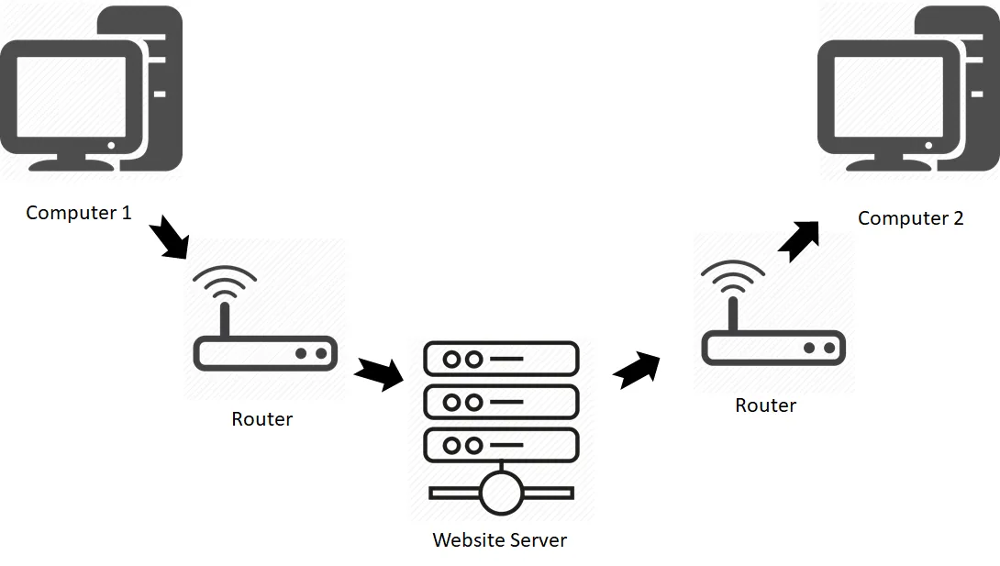

Principle 1: The Need to Share InformationTo transfer data from Computer A to Computer B, the simplest method is physically carrying it, like using a USB drive, but this is slow and doesn’t scale well. A better approach is to connect the two computers directly with a cable, such as Ethernet or fiber optic, allowing signals like voltage or light pulses to represent 1s and 0s. This forms a direct link, which is the most basic type of computer network. |  |
Principle 2: The Problem of ScaleWhen more than two computers need to communicate, directly connecting each one to every other becomes impractical, as the number of cables grows rapidly and doesn’t scale. The solution is to use a central device, called a switch, where each computer connects with just one cable. If Computer A wants to send data to Computer C, it sends the message to the switch, which then forwards it only to the intended computer. This setup forms a Local Network, allowing multiple computers in the same area, such as an office or home, to communicate efficiently. |
|
Principle 3: The Problem of Connecting NetworksOnce we have local networks in different places, like two offices across town, the challenge is connecting them. Running cables between every computer in both networks is impossible, so the solution is to connect the networks themselves. This is done using a special device called a Router, which links one local network to another and forwards traffic between them. By connecting routers from different networks, we can create a large web of interconnected systems. This forms the basis of the Internet: a network of networks, made up of countless private and public local networks connected together through routers. |
|
Principle 4: The Problem of Finding Anyone (Addressing)In a global web of interconnected networks, every device needs a unique way to be identified so messages reach the correct destination. This is solved by the IP Address (Internet Protocol Address), which works like a digital street address (e.g., 142.250.184.142). Each device is assigned one, ensuring it can be uniquely located. When a message is sent, routers read the destination IP address and decide where to forward it next. They don’t know the entire journey, only the best next “hop” that brings the message closer to its destination. This system allows communication across millions of computers worldwide. |
|
Principle 5: The Problem of Reliability and FairnessSending a big file all at once is slow and risky, so the file is split into small pieces called packets. Each packet has some data, the sender and receiver’s IP addresses, and a number to keep them in order. Packets may travel on different paths, but at the end, the receiver collects them, fixes any missing parts, and puts them back together. The rules that handle this process are called TCP/IP, the main protocol of the internet. |
|
| Concept | Meaning / Purpose | Key Details / Examples |
|---|---|---|
| Public IP | Global, unique address on the internet | Given by ISP, must be unique; e.g., your router, Google/Netflix servers |
| Private IP | Local address used only inside private networks | Assigned by router; only unique within network; ranges: 10.x.x.x, 172.16–31.x.x, 192.168.x.x |
| IPv4 | Internet Protocol version 4 (old system) | 32-bit (~4.3B addresses), example: 142.250.72.206 |
| IPv6 | Next-gen protocol to solve address shortage | 128-bit (~340 undecillion addresses), uses hex, example: 2001:0db8:85a3:0000:8a2e:0370:7334 |
| MAC Address | Unique hardware ID for each device | 48-bit, permanent, formats: 3C:22:FB:A3:B4:C5 or 3C-22-FB-A3-B4-C5 |
| Port Number | Identifies services/apps on a device (0–65535) |
|
| DNS | Converts domain names into IP addresses | Steps: Local cache → Recursive Resolver → Root → TLD → Authoritative server → Final IP |